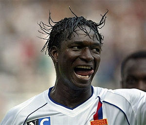

Equipo del negro
 De: La Frikipedia, la enciclopedia extremadamente seria.
De: La Frikipedia, la enciclopedia extremadamente seria.
Equipo que todos nos cogemos alguna vez en el Pro Evolution Soccer para poder ganar sin necesidad de buen fútbol. Dicho equipo cuenta con un negro que corre, que nunca la pierde y que tira muy fuerte (casi siempre a puerta además).
 Ejemplo de Jugador de Equipo Negro
Características
- Puede hacer buen fútbol, pero el jugador opta por la opción fácil: dársela al negro.
- El negro es capaz de dirigir el tiro a portería a pesar de llenar la barra.
- El negro nunca se lesiona.
- El negro siempre te lesiona.
- El negro llega a todos los balones.
- El negro agarra.
- A veces el negro está acompañado de más negros, igual de rápidos y efectivos que el primero.
- Los partidos con equipos de negro suelen desencadenar piques entre los jugadores, los cuales llegan incluso a las manos.
Equipos de negro más conocidos
- Arsenal (Este no tiene un negro, tiene ocho)
- Inter de Milán
- Barcelona
- Real Madrid
- London FC (Chelsea) (Este no tiene ocho, media plantilla y juveniles son negros)
- Manchester United (el negro es blanco, se llama Rooney)
Autor(es):
- Doctor grijander
- Roms
- Kaori
- Caudi
- Khazike Khashondo
- GOD87
- El Sevillano
- ElSabio
Frikipedia 2005-2016, Licencia
GFDL 1.2 - Extraído por FrikiLeaks